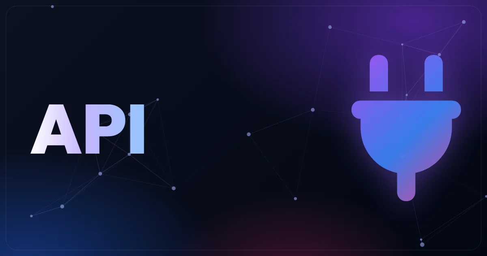

Как работать с API Яндекс.Метрики с помощью языка R

Такие платформы, как Google Analytics и Яндекс. Метрика — инструменты, которые ежедневно используют в своей работе тысячи интернет-маркетологов и веб-аналитиков. Если вы продвигаете пару тройку-сайтов, думаю, достаточно веб-интерфейса этих сервисов. Когда же речь идёт о десятке сайтов, то для оперативной реакции на изменение поведенческих или других качественных показателей недостаточно функций и возможностей интерфейсов. К тому же приходится тратить много времени на переход из одного аккаунта в другой.

Оригинал статьи в блоге Netpeak.
Наиболее эффективный способ организации работы с большим количеством аккаунтов предоставляет API — интерфейс прикладного программирования.
Как получить данные из Google Analytics в R и загрузить в Power BI
Около года назад я уже рассказывал о том, как получить данные из API Google Analytics. В этой статье мы разберёмся, как получить данные из Яндекс. Метрики. А о том, как собирать данные из большинства популярных сервисов вы можете узнать из моего онлайн-курса «Язык R в интернет-маркетинге», который стартует в октябре-ноября этого года.
Какой софт понадобится?
Для работы с API Яндекс. Метрики вы можете использовать любой язык программирования, который поддерживает работу с HTTP-запросами. Но так как сейчас мы говорим о языке R, вам необходимо его скачать и установить.
Для комфортной работы с R рекомендую также установить бесплатную среду разработки RStudio.
Что такое Яндекс. Метрика?
Яндекс.Метрика — это инструмент веб-аналитики, который помогает получать наглядные отчеты, видеозаписи действий посетителей, отслеживать источники трафика и оценивать эффективность онлайн- и офлайн-рекламы.
Информация из официальной справки Яндекс. Метрики.
API-интерфейсы Яндекс. Метрики
У Яндекс. Метрики несколько API-интерфейсов:
- API управления. Предназначен для работы со счётчиками, фильтрами, сегментами, доступами и другими объектами аккаунта Яндекс. Метрики.
- API отчётов. Позволяет получать информацию о статистике посещений сайта и другие данные, не используя интерфейс Яндекс. Метрики.
- API, совместимый с Core API Google Analytics v3. По смыслу и функционалу схож с «API отчётов», но при формирования запроса вы можете использовать такое же название полей, как и при работе с COre API Google Analytics.
- Logs API. Интерфейс для загрузки сырых, не сгруппированных данных о посещениях сайта.
Как начать работу?
Для работы с API Яндекс. Метрики я написал пакет «rym», в контексте R. Пакет — это расширение, которое содержит функции и наборы данных, не доступные в базовой версии R. Cуществует более 10 000 таких пакетов. В основном, репозитории CRAN (Comprehensive R Archive Network), более 80 000 пакетов доступны на GitHub.
Есть официальная русскоязычная документация по работе с пакетом «rym». Также можно найти описание функций на английском.
Чтобы установить пакеты из основного репозитория CRAN, необходимо использовать базовую функцию install.packages:
install.packages("rym")
Также вы можете установить dev-версию пакета из GitHub. Для этого сначала необходимо установить пакет «devtools» и потом с его помощью — «rym». Используйте для этих действий код:
install.packages("devtools")
devtools::install_github("selesnow/rym")
Пакет достаточно установить один раз, но подключать нужно каждый раз при запуске нового сеанса работы с R. Для подключения используйте функцию library.
library(rym)
Теперь вы можете приступить к работе с API Яндекс. Метрики.
Авторизация в API
Процесс авторизации в API Яндекс. Метрики, как и в большинстве других популярных веб-сервисов, осуществляется по протоколу OAuth 2.0.
Для авторизации в Яндекс. Метрики с помощью «rym» вы можете использовать функцию rym_auth, которая принимает следующий набор аргументов:
- login — логин пользователя, под которым вам доступен счётчик Яндекс. Метрики, из которого вы будете запрашивать данные;
- new.user — признак того, что у пользователя обязательно нужно запросить разрешение на доступ к аккаунту (даже если пользователь уже разрешил доступ данному приложению). Получив этот параметр, Яндекс.OAuth предложит пользователю разрешить доступ приложению и выбрать нужный аккаунт Яндекса;
- token.path — путь к папке, в которой будет создан файл для хранения ваших учётных данных для работы с API Яндекс. Метрики.
Процесс авторизации в пакете «rym» происходит следующим образом:
- При запуске любой функции пакета, изначально осуществляется поиск файла с учётными данными в папке, указанной в аргументе token.path. Имя файла состоит из login.rymAuth.RData, где login — значение, указанное в одноимённом аргументе. Таким образом, в ходе одной R-сессии вы можете работать со счётчиками, доступными под любым количеством пользовательских аккаунтов.
- Если ранее вы уже прошли процесс авторизации и дали разрешение на запись полученных учётных данных в локальный файл, то учётные данные подгрузятся оттуда.
- Если вы впервые проходите авторизацию или в аргументе token.path указали папку, в которой ранее не был сохранён файл с учётными данными, вас перенаправит в браузер, в котором необходимо разрешить доступ к данным вашего аккаунта. После этого вы перейдете на страницу, где будет сгенерирован семизначный код для подтверждения авторизации. Скопируйте и вставьте его в R-консоль в ответ на запрос «Enter authorize code:».
- Далее у вас запросят разрешение на создание полученных учётных данных в локальный файл «Do you want save API credential in local file token.path/login.rymAuth.RData for use it between R sessions?». На запрос необходимо ответить одним из таких значений: yes, ok или save.
- После чего в папке, указанной в аргументе token.path,сохранится файл login.rymAuth.RDataи при следующих обращениях к API, в случае если вы укажите ту же папку в аргументе token.path,учётные данные для обращения к API будут загружены из файла login.rymAuth.RData.
Как вы уже поняли поняли, не обязательно проходить авторизацию отдельно через функцию rym_auth.Данный процесс запустится при использовании любой из функций пакета «rym».
Работа с API управления
В пакете «rym» для работы с «API управления» созданы функции:
rym_get_counters— список доступных счётчиков Яндекс. Метрики;rym_get_filters— список настроенных фильтров в счётчике;rym_get_segments— список настроенных сегмнтов в счётчике Яндекс. Метрики;rym_get_goals— список настроенных целей в Яндекс. Метрике;rym_users_grants— список пользователей, у которых есть доступ к счётчику Яндекс. Метрики, с указанием уровня доступа.
Все эти функции принимают одинаковый набор аргументов:
- counter — Id счётчика Яндекс. Метрики;
- login — имя пользователя, под которым доступен нужный счётчик Яндекс. Метрики. Используется при авторизации и при поиске файла, в котором хранятся учётные данные пользователя;
- token.path — путь к папке, в которой хранится файл с учётными данными.
Пример работы с API управления:
При использования кода, замените «логин» на логин пользователя в Яндексе, у которого есть доступ к нужному вам счётчику, а «0000000» — на Id нужного вам счётчика.
library(rym)
# получить список счётчиков
selesnow.counters <- rym_get_counters(login = "<логин>",
token.path = "metrica_token")
# получить список целей
my_goals <- rym_get_goals(counter = <0000000>,
login = "<логин>",
token.path = "metrica_token")
# получить список фильров
my_filter <- rym_get_filters(counter = <0000000>,
login = "<логин>",
token.path = "metrica_token")
# получить список сегментов
my_segments <- rym_get_segments(counter = <0000000>,
login = "<логин>",
token.path = "metrica_token")
# получить список пользователей счётчика
users <- rym_users_grants(counter = <0000000>,
login = "<логин>",
token.path = "metrica_token")
Работа с API отчётов
С помощью этого API-интерфейса вы можете запрашивать из счётчика Яндекс. Метрики любые статистические данные о посещении ваших сайтов.
Для работы с «API отчётов» в «rym» предназначена функция rym_get_data. А вот аргументы, которые она принимает:
- direct.client.logins — логины клиентов Яндекс. Директа, через запятую. Могут использоваться для формирования отчета «Директ-расходы».
- counters — идентификаторы счетчиков, через запятую.
- metrics — список метрик, разделенных запятой. Лимит: 20 метрик в запросе. Актуальный список доступных метрик есть в официальной справке.
- dimensions — список группировок, разделенных запятой. Лимит: 10 группировок в запросе. Актуальный список группировок можно посмотреть в официальной справке.
- filters — фильтрация данных. Лимит: количество уникальных группировок и метрик — до 10; количество отдельных фильтров — до 20; длина строки в фильтре — до 10 000 символов.
- sort — поля, по которым будут отсортированы данные.
- date.from и date.to — период отчёта можно задавать статическими датами в формате ГГГГ-ММ-ДД или относительными значениями: today, yesterday, ndaysAgo.
- accuracy — точность вычисления результата. Позволяет управлять семплированием (количеством визитов, использованных при расчете итогового значения). Этот параметр может принимать несколько значений:
- low — возвращает быстрый результат на основе сокращенной выборки данных;
- medium — возвращает результат на основе выборки, сочетающей скорость и точность данных;
- high — возвращает наиболее точное значение, используя наибольшую выборку данных. Этот режим может потребовать дополнительное время и замедлить обработку запроса;
- full — возвращает все данные.
Также этот параметр может принимать числовое значение из полуинтервала (0,1]:
- 1 — отсутствует семплирование (соответствует значению full);
- 0,1 или 0,01 — доля возвращаемых данных (10%, 1%). Любое значение (например, 0,42) будет округляться до ближайшей степени числа 10.
- include_undefined — включает в ответ строки, для которых значения группировок не определены. Влияет только на первую группировку. По умолчанию выключено.
- lang — язык, на котором будет представлен отчёт, по умолчанию «ru».
- timezone — часовой пояс в формате ±hh:mm в диапазоне [-23:59; +23:59] (знак плюса нужно передавать как %2B), в котором будет рассчитан период выборки запроса и связанные с датой и временем группировки. По умолчанию используется часовой пояс счетчика.
- pretty — задает форматирование результата. Чтобы использовать форматирование, укажите значение true.
- login — имя пользователя, под которым доступен нужный счётчик Яндекс. Метрики. Используется при авторизации и поиске файла, в котором хранятся учётные данные данного пользователя.
- token.path — путь к папке, в которой хранится файл с учётными данными.
Пример работы с интерфейсом «API отчётов»:
reporting.api.stat <- rym_get_data(counters = "00000000,11111111",
date.from = "2018-08-01",
date.to = "yesterday",
dimensions = "ym:s:date,ym:s:lastTrafficSource",
metrics = "ym:s:visits,ym:s:pageviews,ym:s:users",
sort = "-ym:s:date",
login = "<логин>",
token.path = "metrica_token",
lang = "en")
Работа с Logs API
Logs API позволяет получать неагрегированные данные, собираемые Яндекс. Метрикой. API предназначен для пользователей сервиса, которые хотят самостоятельно обрабатывать статистические данные и использовать их для решения уникальных аналитических задач.
Информация из официальной справки API Яндекс. Метрики.
Данные из Logs API можно получить по просмотрам («хитам») и визитам («сессиям»).
При работе с пакетом «rym» неагрегированные данные можно запрашивать с помощью функции rym_get_logs, которая принимает следующие параметры:
- counter — Id счётчика Яндекс. Метрики;
- date.from и date.to — период отчёта, даты в формате YYYY-MM-DD. Дата окончания не может быть сегодняшним днём;
- source — источник логов. Допустимые значения: «hits» и «visits»;
- fields — список полей через запятую, актуальный список полей можно получить из официальной справки. Для визитов и просмотров поля отличаются;
- login — имя пользователя, под которым доступен нужный счётчик Яндекс. Метрики. Используется при авторизации и при поиске файла, в котором хранятся учётные данные пользователя;
- token.path — путь к папке, в которой хранится файл с учётными данными.
Пример работы с «Logs API»:
logs.api.stat <- rym_get_logs(counter = 00000000,
date.from = "2018-08-01",
date.to = "2018-08-05",
fields = "ym:s:date,
ym:s:lastTrafficSource,
ym:s:referer",
source = "visits",
login = "<логин>",
token.path = "metrica_token")
Работа с API, совместимым с Core API Google Analytics
API совместим с Google Analytics Core Reporting API (v3) и позволяет выполнять такие операции:
- получать информацию о посещаемости сайта и другие данные;
- интегрировать данные Яндекс. Метрики с приложениями, разработанными с учетом особенностей Google Analytics Core Reporting API(v3);
- использовать привычные параметры запросов при сборе статистики, если ранее вы работали с Google Analytics Core Reporting API (v3).
Информация из официальной справки API Яндекс. Метрики.
Отсюда вывод — API будет удобен тем, кто привык работать с Core API Google Analytics. В пакете «rym» для этого предназначена функция rym_get_ga.
Аргументы функции rym_get_ga:
- start.date и end.date — отчётный период. Вы можете указывать даты в формате YYYY-MM-DD или использовать относительные временные значения: today, yesterday, NdaysAgo.
- counter — номер счетчика, данные которого необходимо получить. В отличие от предыдущих функций, в данном случае перед номером счетчика необходимо указать префикс ga:.
- dimensions — группировки объединяют данные по критериям. Если по указанной группировке данные не были получены, возвращается значение «not set» для тех категорий, которые не определились. В состав одного запроса может входить не более семи группировок.
- metrics — метрики позволяют получать данные о статистике посещаемости и активности пользователей сайта. В состав одного запроса может входить не более десяти метрик.
- sampling.level — используйте параметр для указания уровня семплирования (количества визитов, использованных при расчете итогового значения). Допустимые значения:
- HIGHER_PRECISION — возвращает максимально точное значение, используя наибольшую выборку данных. Этот режим может потребовать дополнительное время и замедлить обработку запроса;
- FASTER — возвращает быстрый результат на основе сокращенной выборки данных;
- DEFAULT — возвращает результат на основе выборки, сочетающей скорость и точность данных;
- login — имя пользователя, под которым доступен нужный счётчик Яндекс. Метрики. Используется при авторизации и при поиске файла, в котором хранятся учётные данные пользователя;
- token.path — путь к папке, в которой хранится файл с учётными данными.
Пример работы с API Яндекс. Метрики, совместимым с Core API Google Analytics (v3):
ga.api.stat <- rym_get_ga(counter = "ga:0000000",
dimensions = "ga:date,ga:source",
metrics = "ga:sessions,ga:users",
start.date = "2018-08-01",
end.date = "2018-08-05",
sort = "-ga:date",
login = "<логин>",
token.path = "metrica_token")
Выводы
Мы рассмотрели работу со всеми API, доступными на данный момент в Яндекс. Метрике, а также познакомились со всеми функциями пакета «rym» — интерфейсом взаимодействия между R и Яндекс. Метрикой. С помощью этих инструментов вы можете эффективно организовать работу даже, если одновременно продвигаете десятки сайтов.
Язык R в интернет-маркетинге — дайджест полезных публикаций
Если хотите узнать о том, как работать с API таких систем как Яндекс. Директ, Facebook, MyTarget и множества других рекламных сервисов и платформ веб-аналитики, вам будет полезна подборка статей по этой теме в моём блоге.